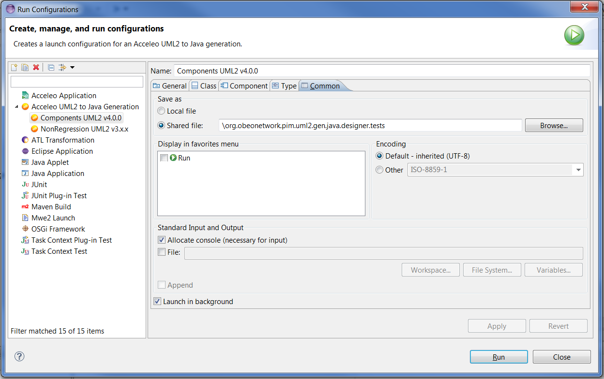
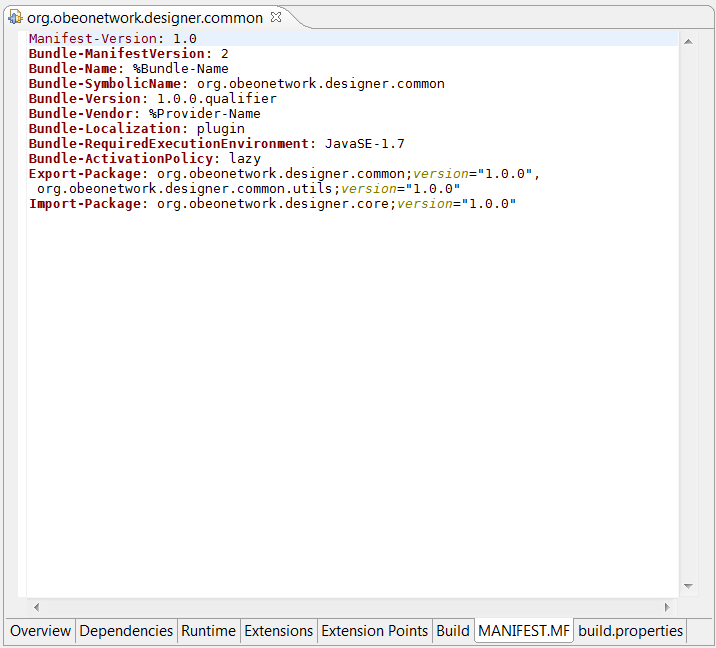

Generate code from any kind of UML model...
The UML to Java code generator let you generate code from any UML model compatible with the Eclipse UML2 project.
You can build your model with the tool of your choice like the regular tree-based UML editor or even
UML Designer.
With a dedicated launch configuration
-
Forget the properties files of a basic Acceleo generator, this new version of the UML to Java generator comes with
a dedicated launch configuration where you can select all the details of the generation. This launch configuration
can also be saved on your disk and shared with your team, giving you that way, the ability to reproduce easily a
generation with specific settings. In this new launch configuration, you can choose the types to ignore, the Java
runtime environment to associate with the generated project and much more.
-

Support for the component diagrams
-

-
This new version of the generator now consider components as first class citizens. The generation will not use a regular
folder as a target but instead, it will generate a new Java project for each components in your model. You can even
opt-in to have Eclipse plug-ins and features generated to represent your component architecture. With this option, you
will have an internationalized MANIFEST.MF files with exported and imported packages along with features.xml files
grouping your plug-ins just like in your model. If your model does not have any component, you can configure in the launch
configuration the name, classpath and Java runtime environment of the default Java project to create for your code.
A new improved version
This new version of the UML to Java generator is faster than ever and it contains the latest bug fixes. This new version
supports the generation of nested classifiers, an improved support of the documentation and formatting of the generated code.